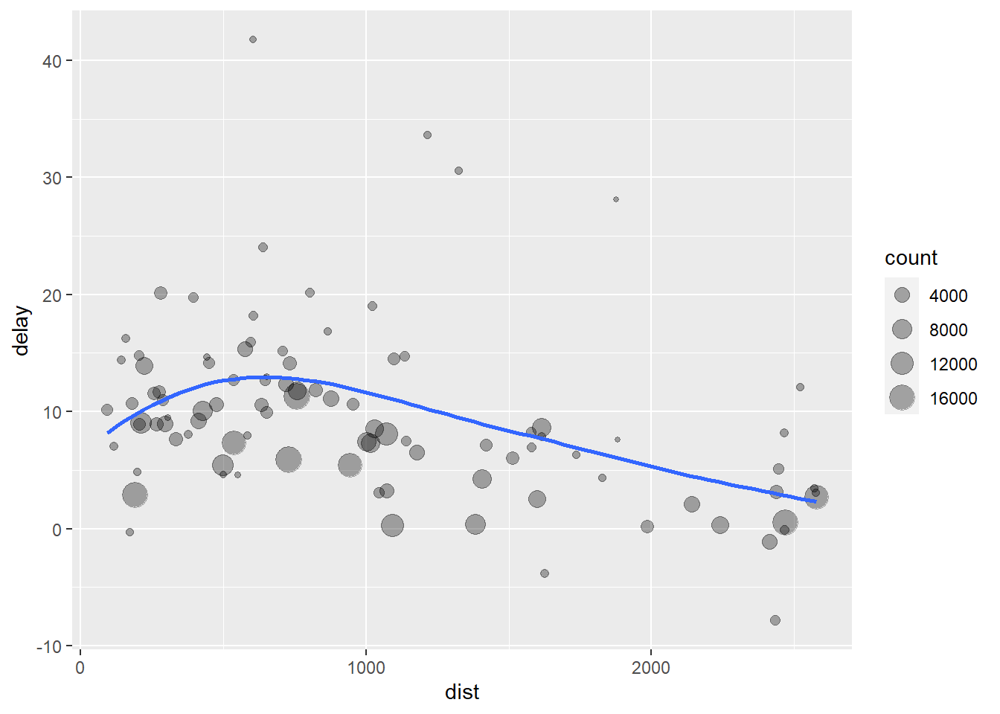
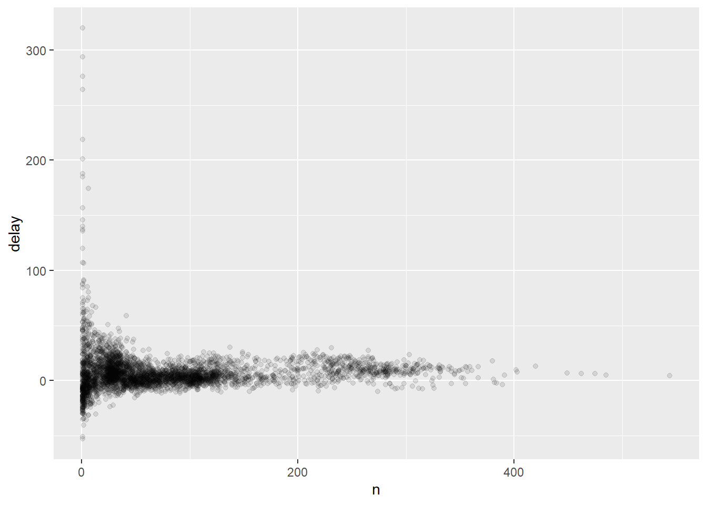
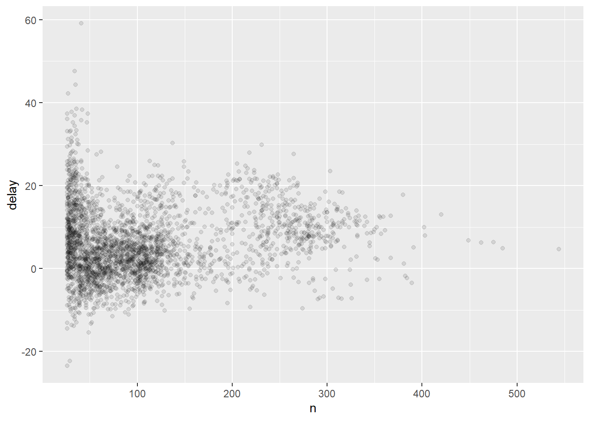

Data Transformation
@ Rifqy Rosyidah Ilmi @ Prof Dr Suhartono M.Kom @ Magister Informatika @ UIN Maulana Malik Ibrahim @ UIN Malang
2/15/2021
Transformasi Data menggunakan paket dplyr, bagian dari tidyverse. Ilustrasi data dari paket nycflights13 dan menggunakan ggplot2 untuk membantu memahami data. Penjelasan ini diambil dari buku R for Data Science pada laman https://r4ds.had.co.nz/transform.html
library(nycflights13)
library(tidyverse)## -- Attaching packages ------------------------------------------- tidyverse 1.3.0 --## v ggplot2 3.3.3 v purrr 0.3.4
## v tibble 3.0.6 v dplyr 1.0.4
## v tidyr 1.1.2 v stringr 1.4.0
## v readr 1.4.0 v forcats 0.5.1## -- Conflicts ---------------------------------------------- tidyverse_conflicts() --
## x dplyr::filter() masks stats::filter()
## x dplyr::lag() masks stats::lag()nycflights13 :: flight merupakan data berisi 336.776 penerbangan yang berangkat dari Kota New York pada tahun 2013. Data tersebut berasal dari Biro Statistik Transportasi AS, dan didokumentasikan dalam ?flights
flights## # A tibble: 336,776 x 19
## year month day dep_time sched_dep_time dep_delay arr_time sched_arr_time
## <int> <int> <int> <int> <int> <dbl> <int> <int>
## 1 2013 1 1 517 515 2 830 819
## 2 2013 1 1 533 529 4 850 830
## 3 2013 1 1 542 540 2 923 850
## 4 2013 1 1 544 545 -1 1004 1022
## 5 2013 1 1 554 600 -6 812 837
## 6 2013 1 1 554 558 -4 740 728
## 7 2013 1 1 555 600 -5 913 854
## 8 2013 1 1 557 600 -3 709 723
## 9 2013 1 1 557 600 -3 838 846
## 10 2013 1 1 558 600 -2 753 745
## # ... with 336,766 more rows, and 11 more variables: arr_delay <dbl>,
## # carrier <chr>, flight <int>, tailnum <chr>, origin <chr>, dest <chr>,
## # air_time <dbl>, distance <dbl>, hour <dbl>, minute <dbl>, time_hour <dttm>#> # A tibble: 336,776 x 19
#> year month day dep_time sched_dep_time dep_delay arr_time sched_arr_time
#> <int> <int> <int> <int> <int> <dbl> <int> <int>
#> 1 2013 1 1 517 515 2 830 819
#> 2 2013 1 1 533 529 4 850 830
#> 3 2013 1 1 542 540 2 923 850
#> 4 2013 1 1 544 545 -1 1004 1022
#> 5 2013 1 1 554 600 -6 812 837
#> 6 2013 1 1 554 558 -4 740 728
#> # … with 336,770 more rows, and 11 more variables: arr_delay <dbl>,
#> # carrier <chr>, flight <int>, tailnum <chr>, origin <chr>, dest <chr>,
#> # air_time <dbl>, distance <dbl>, hour <dbl>, minute <dbl>, time_hour <dttm>filter () digunakan untuk membuat subset pengamatan berdasarkan nilainya. Misalnya, dipilih semua penerbangan pada tanggal 1 Januari dengan:
filter(flights, month == 1, day == 1)## # A tibble: 842 x 19
## year month day dep_time sched_dep_time dep_delay arr_time sched_arr_time
## <int> <int> <int> <int> <int> <dbl> <int> <int>
## 1 2013 1 1 517 515 2 830 819
## 2 2013 1 1 533 529 4 850 830
## 3 2013 1 1 542 540 2 923 850
## 4 2013 1 1 544 545 -1 1004 1022
## 5 2013 1 1 554 600 -6 812 837
## 6 2013 1 1 554 558 -4 740 728
## 7 2013 1 1 555 600 -5 913 854
## 8 2013 1 1 557 600 -3 709 723
## 9 2013 1 1 557 600 -3 838 846
## 10 2013 1 1 558 600 -2 753 745
## # ... with 832 more rows, and 11 more variables: arr_delay <dbl>, carrier <chr>,
## # flight <int>, tailnum <chr>, origin <chr>, dest <chr>, air_time <dbl>,
## # distance <dbl>, hour <dbl>, minute <dbl>, time_hour <dttm>#> # A tibble: 842 x 19
#> year month day dep_time sched_dep_time dep_delay arr_time sched_arr_time
#> <int> <int> <int> <int> <int> <dbl> <int> <int>
#> 1 2013 1 1 517 515 2 830 819
#> 2 2013 1 1 533 529 4 850 830
#> 3 2013 1 1 542 540 2 923 850
#> 4 2013 1 1 544 545 -1 1004 1022
#> 5 2013 1 1 554 600 -6 812 837
#> 6 2013 1 1 554 558 -4 740 728
#> # … with 836 more rows, and 11 more variables: arr_delay <dbl>, carrier <chr>,
#> # flight <int>, tailnum <chr>, origin <chr>, dest <chr>, air_time <dbl>,
#> # distance <dbl>, hour <dbl>, minute <dbl>, time_hour <dttm>Jika ingin menyimpan hasil hasil filter maka dapat menggunakan oeprator <-
jan1 <- filter(flights, month == 1, day == 1)R dapat menampilkan hasil filter maupun menyimpan dalam varibel, untuk menggunakan keduanya maka :
(dec25 <- filter(flights, month == 12, day == 25))## # A tibble: 719 x 19
## year month day dep_time sched_dep_time dep_delay arr_time sched_arr_time
## <int> <int> <int> <int> <int> <dbl> <int> <int>
## 1 2013 12 25 456 500 -4 649 651
## 2 2013 12 25 524 515 9 805 814
## 3 2013 12 25 542 540 2 832 850
## 4 2013 12 25 546 550 -4 1022 1027
## 5 2013 12 25 556 600 -4 730 745
## 6 2013 12 25 557 600 -3 743 752
## 7 2013 12 25 557 600 -3 818 831
## 8 2013 12 25 559 600 -1 855 856
## 9 2013 12 25 559 600 -1 849 855
## 10 2013 12 25 600 600 0 850 846
## # ... with 709 more rows, and 11 more variables: arr_delay <dbl>, carrier <chr>,
## # flight <int>, tailnum <chr>, origin <chr>, dest <chr>, air_time <dbl>,
## # distance <dbl>, hour <dbl>, minute <dbl>, time_hour <dttm>#> # A tibble: 719 x 19
#> year month day dep_time sched_dep_time dep_delay arr_time sched_arr_time
#> <int> <int> <int> <int> <int> <dbl> <int> <int>
#> 1 2013 12 25 456 500 -4 649 651
#> 2 2013 12 25 524 515 9 805 814
#> 3 2013 12 25 542 540 2 832 850
#> 4 2013 12 25 546 550 -4 1022 1027
#> 5 2013 12 25 556 600 -4 730 745
#> 6 2013 12 25 557 600 -3 743 752
#> # … with 713 more rows, and 11 more variables: arr_delay <dbl>, carrier <chr>,
#> # flight <int>, tailnum <chr>, origin <chr>, dest <chr>, air_time <dbl>,
#> # distance <dbl>, hour <dbl>, minute <dbl>, time_hour <dttm>Operator logika menggunakan == akan menghasilkan data (sama dengan)
filter(flights, month == 11 | month == 12)## # A tibble: 55,403 x 19
## year month day dep_time sched_dep_time dep_delay arr_time sched_arr_time
## <int> <int> <int> <int> <int> <dbl> <int> <int>
## 1 2013 11 1 5 2359 6 352 345
## 2 2013 11 1 35 2250 105 123 2356
## 3 2013 11 1 455 500 -5 641 651
## 4 2013 11 1 539 545 -6 856 827
## 5 2013 11 1 542 545 -3 831 855
## 6 2013 11 1 549 600 -11 912 923
## 7 2013 11 1 550 600 -10 705 659
## 8 2013 11 1 554 600 -6 659 701
## 9 2013 11 1 554 600 -6 826 827
## 10 2013 11 1 554 600 -6 749 751
## # ... with 55,393 more rows, and 11 more variables: arr_delay <dbl>, carrier <chr>,
## # flight <int>, tailnum <chr>, origin <chr>, dest <chr>, air_time <dbl>,
## # distance <dbl>, hour <dbl>, minute <dbl>, time_hour <dttm>Untuk menghasilkan data yang sama maka dapat digunakan perintah x %in% y, dimana setiap x adalah salah satu nilai di y :
nov_dec <- filter(flights, month %in% c(11, 12))dapat pula digunakan hukum De Morgan:! (X & y) sama dengan! X | ! y, dan! (x | y) sama dengan! x &! y. Misalnya, jika ingin menemukan penerbangan yang tidak ditunda (pada kedatangan atau keberangkatan) lebih dari dua jam, maka dapat menggunakan salah satu dari dua filter berikut :
filter(flights, !(arr_delay > 120 | dep_delay > 120))## # A tibble: 316,050 x 19
## year month day dep_time sched_dep_time dep_delay arr_time sched_arr_time
## <int> <int> <int> <int> <int> <dbl> <int> <int>
## 1 2013 1 1 517 515 2 830 819
## 2 2013 1 1 533 529 4 850 830
## 3 2013 1 1 542 540 2 923 850
## 4 2013 1 1 544 545 -1 1004 1022
## 5 2013 1 1 554 600 -6 812 837
## 6 2013 1 1 554 558 -4 740 728
## 7 2013 1 1 555 600 -5 913 854
## 8 2013 1 1 557 600 -3 709 723
## 9 2013 1 1 557 600 -3 838 846
## 10 2013 1 1 558 600 -2 753 745
## # ... with 316,040 more rows, and 11 more variables: arr_delay <dbl>,
## # carrier <chr>, flight <int>, tailnum <chr>, origin <chr>, dest <chr>,
## # air_time <dbl>, distance <dbl>, hour <dbl>, minute <dbl>, time_hour <dttm>filter(flights, arr_delay <= 120, dep_delay <= 120)## # A tibble: 316,050 x 19
## year month day dep_time sched_dep_time dep_delay arr_time sched_arr_time
## <int> <int> <int> <int> <int> <dbl> <int> <int>
## 1 2013 1 1 517 515 2 830 819
## 2 2013 1 1 533 529 4 850 830
## 3 2013 1 1 542 540 2 923 850
## 4 2013 1 1 544 545 -1 1004 1022
## 5 2013 1 1 554 600 -6 812 837
## 6 2013 1 1 554 558 -4 740 728
## 7 2013 1 1 555 600 -5 913 854
## 8 2013 1 1 557 600 -3 709 723
## 9 2013 1 1 557 600 -3 838 846
## 10 2013 1 1 558 600 -2 753 745
## # ... with 316,040 more rows, and 11 more variables: arr_delay <dbl>,
## # carrier <chr>, flight <int>, tailnum <chr>, origin <chr>, dest <chr>,
## # air_time <dbl>, distance <dbl>, hour <dbl>, minute <dbl>, time_hour <dttm>arrange () digunakan untuk mengurutkan tampilan data :
arrange(flights, year, month, day)## # A tibble: 336,776 x 19
## year month day dep_time sched_dep_time dep_delay arr_time sched_arr_time
## <int> <int> <int> <int> <int> <dbl> <int> <int>
## 1 2013 1 1 517 515 2 830 819
## 2 2013 1 1 533 529 4 850 830
## 3 2013 1 1 542 540 2 923 850
## 4 2013 1 1 544 545 -1 1004 1022
## 5 2013 1 1 554 600 -6 812 837
## 6 2013 1 1 554 558 -4 740 728
## 7 2013 1 1 555 600 -5 913 854
## 8 2013 1 1 557 600 -3 709 723
## 9 2013 1 1 557 600 -3 838 846
## 10 2013 1 1 558 600 -2 753 745
## # ... with 336,766 more rows, and 11 more variables: arr_delay <dbl>,
## # carrier <chr>, flight <int>, tailnum <chr>, origin <chr>, dest <chr>,
## # air_time <dbl>, distance <dbl>, hour <dbl>, minute <dbl>, time_hour <dttm>#> # A tibble: 336,776 x 19
#> year month day dep_time sched_dep_time dep_delay arr_time sched_arr_time
#> <int> <int> <int> <int> <int> <dbl> <int> <int>
#> 1 2013 1 1 517 515 2 830 819
#> 2 2013 1 1 533 529 4 850 830
#> 3 2013 1 1 542 540 2 923 850
#> 4 2013 1 1 544 545 -1 1004 1022
#> 5 2013 1 1 554 600 -6 812 837
#> 6 2013 1 1 554 558 -4 740 728
#> # … with 336,770 more rows, and 11 more variables: arr_delay <dbl>,
#> # carrier <chr>, flight <int>, tailnum <chr>, origin <chr>, dest <chr>,
#> # air_time <dbl>, distance <dbl>, hour <dbl>, minute <dbl>, time_hour <dttm>desc()digunakan untuk urutan menurun
arrange(flights, desc(dep_delay))## # A tibble: 336,776 x 19
## year month day dep_time sched_dep_time dep_delay arr_time sched_arr_time
## <int> <int> <int> <int> <int> <dbl> <int> <int>
## 1 2013 1 9 641 900 1301 1242 1530
## 2 2013 6 15 1432 1935 1137 1607 2120
## 3 2013 1 10 1121 1635 1126 1239 1810
## 4 2013 9 20 1139 1845 1014 1457 2210
## 5 2013 7 22 845 1600 1005 1044 1815
## 6 2013 4 10 1100 1900 960 1342 2211
## 7 2013 3 17 2321 810 911 135 1020
## 8 2013 6 27 959 1900 899 1236 2226
## 9 2013 7 22 2257 759 898 121 1026
## 10 2013 12 5 756 1700 896 1058 2020
## # ... with 336,766 more rows, and 11 more variables: arr_delay <dbl>,
## # carrier <chr>, flight <int>, tailnum <chr>, origin <chr>, dest <chr>,
## # air_time <dbl>, distance <dbl>, hour <dbl>, minute <dbl>, time_hour <dttm>#> # A tibble: 336,776 x 19
#> year month day dep_time sched_dep_time dep_delay arr_time sched_arr_time
#> <int> <int> <int> <int> <int> <dbl> <int> <int>
#> 1 2013 1 9 641 900 1301 1242 1530
#> 2 2013 6 15 1432 1935 1137 1607 2120
#> 3 2013 1 10 1121 1635 1126 1239 1810
#> 4 2013 9 20 1139 1845 1014 1457 2210
#> 5 2013 7 22 845 1600 1005 1044 1815
#> 6 2013 4 10 1100 1900 960 1342 2211
#> # … with 336,770 more rows, and 11 more variables: arr_delay <dbl>,
#> # carrier <chr>, flight <int>, tailnum <chr>, origin <chr>, dest <chr>,
#> # air_time <dbl>, distance <dbl>, hour <dbl>, minute <dbl>, time_hour <dttm>nilai yang tidak ditemukan (NA) ditampilkan pada urutan terakhir
df <- tibble(x = c(5, 2, NA))
arrange(df, x)## # A tibble: 3 x 1
## x
## <dbl>
## 1 2
## 2 5
## 3 NA#> # A tibble: 3 x 1
#> x
#> <dbl>
#> 1 2
#> 2 5
#> 3 NA
arrange(df, desc(x))## # A tibble: 3 x 1
## x
## <dbl>
## 1 5
## 2 2
## 3 NA#> # A tibble: 3 x 1
#> x
#> <dbl>
#> 1 5
#> 2 2
#> 3 NAselect() digunakan untuk memilih data :
# Select columns by name
select(flights, year, month, day)## # A tibble: 336,776 x 3
## year month day
## <int> <int> <int>
## 1 2013 1 1
## 2 2013 1 1
## 3 2013 1 1
## 4 2013 1 1
## 5 2013 1 1
## 6 2013 1 1
## 7 2013 1 1
## 8 2013 1 1
## 9 2013 1 1
## 10 2013 1 1
## # ... with 336,766 more rows#> # A tibble: 336,776 x 3
#> year month day
#> <int> <int> <int>
#> 1 2013 1 1
#> 2 2013 1 1
#> 3 2013 1 1
#> 4 2013 1 1
#> 5 2013 1 1
#> 6 2013 1 1
#> # … with 336,770 more rows
# Select all columns between year and day (inclusive)
select(flights, year:day)## # A tibble: 336,776 x 3
## year month day
## <int> <int> <int>
## 1 2013 1 1
## 2 2013 1 1
## 3 2013 1 1
## 4 2013 1 1
## 5 2013 1 1
## 6 2013 1 1
## 7 2013 1 1
## 8 2013 1 1
## 9 2013 1 1
## 10 2013 1 1
## # ... with 336,766 more rows#> # A tibble: 336,776 x 3
#> year month day
#> <int> <int> <int>
#> 1 2013 1 1
#> 2 2013 1 1
#> 3 2013 1 1
#> 4 2013 1 1
#> 5 2013 1 1
#> 6 2013 1 1
#> # … with 336,770 more rows
# Select all columns except those from year to day (inclusive)
select(flights, -(year:day))## # A tibble: 336,776 x 16
## dep_time sched_dep_time dep_delay arr_time sched_arr_time arr_delay carrier
## <int> <int> <dbl> <int> <int> <dbl> <chr>
## 1 517 515 2 830 819 11 UA
## 2 533 529 4 850 830 20 UA
## 3 542 540 2 923 850 33 AA
## 4 544 545 -1 1004 1022 -18 B6
## 5 554 600 -6 812 837 -25 DL
## 6 554 558 -4 740 728 12 UA
## 7 555 600 -5 913 854 19 B6
## 8 557 600 -3 709 723 -14 EV
## 9 557 600 -3 838 846 -8 B6
## 10 558 600 -2 753 745 8 AA
## # ... with 336,766 more rows, and 9 more variables: flight <int>, tailnum <chr>,
## # origin <chr>, dest <chr>, air_time <dbl>, distance <dbl>, hour <dbl>,
## # minute <dbl>, time_hour <dttm>#> # A tibble: 336,776 x 16
#> dep_time sched_dep_time dep_delay arr_time sched_arr_time arr_delay carrier
#> <int> <int> <dbl> <int> <int> <dbl> <chr>
#> 1 517 515 2 830 819 11 UA
#> 2 533 529 4 850 830 20 UA
#> 3 542 540 2 923 850 33 AA
#> 4 544 545 -1 1004 1022 -18 B6
#> 5 554 600 -6 812 837 -25 DL
#> 6 554 558 -4 740 728 12 UA
#> # … with 336,770 more rows, and 9 more variables: flight <int>, tailnum <chr>,
#> # origin <chr>, dest <chr>, air_time <dbl>, distance <dbl>, hour <dbl>,
#> # minute <dbl>, time_hour <dttm>rename () yang merupakan varian dari select () dapat digunakan untuk menyimpan semua variabel yang tidak disebutkan secara eksplisit
rename(flights, tail_num = tailnum)## # A tibble: 336,776 x 19
## year month day dep_time sched_dep_time dep_delay arr_time sched_arr_time
## <int> <int> <int> <int> <int> <dbl> <int> <int>
## 1 2013 1 1 517 515 2 830 819
## 2 2013 1 1 533 529 4 850 830
## 3 2013 1 1 542 540 2 923 850
## 4 2013 1 1 544 545 -1 1004 1022
## 5 2013 1 1 554 600 -6 812 837
## 6 2013 1 1 554 558 -4 740 728
## 7 2013 1 1 555 600 -5 913 854
## 8 2013 1 1 557 600 -3 709 723
## 9 2013 1 1 557 600 -3 838 846
## 10 2013 1 1 558 600 -2 753 745
## # ... with 336,766 more rows, and 11 more variables: arr_delay <dbl>,
## # carrier <chr>, flight <int>, tail_num <chr>, origin <chr>, dest <chr>,
## # air_time <dbl>, distance <dbl>, hour <dbl>, minute <dbl>, time_hour <dttm>#> # A tibble: 336,776 x 19
#> year month day dep_time sched_dep_time dep_delay arr_time sched_arr_time
#> <int> <int> <int> <int> <int> <dbl> <int> <int>
#> 1 2013 1 1 517 515 2 830 819
#> 2 2013 1 1 533 529 4 850 830
#> 3 2013 1 1 542 540 2 923 850
#> 4 2013 1 1 544 545 -1 1004 1022
#> 5 2013 1 1 554 600 -6 812 837
#> 6 2013 1 1 554 558 -4 740 728
#> # … with 336,770 more rows, and 11 more variables: arr_delay <dbl>,
#> # carrier <chr>, flight <int>, tail_num <chr>, origin <chr>, dest <chr>,
#> # air_time <dbl>, distance <dbl>, hour <dbl>, minute <dbl>, time_hour <dttm>Menggunakan select () bersama dengan helper everything ()dapat digunakan untuk memindahkan variabel ke awal bingkai data.
select(flights, time_hour, air_time, everything())## # A tibble: 336,776 x 19
## time_hour air_time year month day dep_time sched_dep_time dep_delay
## <dttm> <dbl> <int> <int> <int> <int> <int> <dbl>
## 1 2013-01-01 05:00:00 227 2013 1 1 517 515 2
## 2 2013-01-01 05:00:00 227 2013 1 1 533 529 4
## 3 2013-01-01 05:00:00 160 2013 1 1 542 540 2
## 4 2013-01-01 05:00:00 183 2013 1 1 544 545 -1
## 5 2013-01-01 06:00:00 116 2013 1 1 554 600 -6
## 6 2013-01-01 05:00:00 150 2013 1 1 554 558 -4
## 7 2013-01-01 06:00:00 158 2013 1 1 555 600 -5
## 8 2013-01-01 06:00:00 53 2013 1 1 557 600 -3
## 9 2013-01-01 06:00:00 140 2013 1 1 557 600 -3
## 10 2013-01-01 06:00:00 138 2013 1 1 558 600 -2
## # ... with 336,766 more rows, and 11 more variables: arr_time <int>,
## # sched_arr_time <int>, arr_delay <dbl>, carrier <chr>, flight <int>,
## # tailnum <chr>, origin <chr>, dest <chr>, distance <dbl>, hour <dbl>,
## # minute <dbl>#> # A tibble: 336,776 x 19
#> time_hour air_time year month day dep_time sched_dep_time
#> <dttm> <dbl> <int> <int> <int> <int> <int>
#> 1 2013-01-01 05:00:00 227 2013 1 1 517 515
#> 2 2013-01-01 05:00:00 227 2013 1 1 533 529
#> 3 2013-01-01 05:00:00 160 2013 1 1 542 540
#> 4 2013-01-01 05:00:00 183 2013 1 1 544 545
#> 5 2013-01-01 06:00:00 116 2013 1 1 554 600
#> 6 2013-01-01 05:00:00 150 2013 1 1 554 558
#> # … with 336,770 more rows, and 12 more variables: dep_delay <dbl>,
#> # arr_time <int>, sched_arr_time <int>, arr_delay <dbl>, carrier <chr>,
#> # flight <int>, tailnum <chr>, origin <chr>, dest <chr>, distance <dbl>,
#> # hour <dbl>, minute <dbl>mutate () digunakan untuk menambahkan kolom baru yang merupakan fungsi dari kolom yang ada
flights_sml <- select(flights,
year:day,
ends_with("delay"),
distance,
air_time
)
mutate(flights_sml,
gain = dep_delay - arr_delay,
speed = distance / air_time * 60
)## # A tibble: 336,776 x 9
## year month day dep_delay arr_delay distance air_time gain speed
## <int> <int> <int> <dbl> <dbl> <dbl> <dbl> <dbl> <dbl>
## 1 2013 1 1 2 11 1400 227 -9 370.
## 2 2013 1 1 4 20 1416 227 -16 374.
## 3 2013 1 1 2 33 1089 160 -31 408.
## 4 2013 1 1 -1 -18 1576 183 17 517.
## 5 2013 1 1 -6 -25 762 116 19 394.
## 6 2013 1 1 -4 12 719 150 -16 288.
## 7 2013 1 1 -5 19 1065 158 -24 404.
## 8 2013 1 1 -3 -14 229 53 11 259.
## 9 2013 1 1 -3 -8 944 140 5 405.
## 10 2013 1 1 -2 8 733 138 -10 319.
## # ... with 336,766 more rows#> # A tibble: 336,776 x 9
#> year month day dep_delay arr_delay distance air_time gain speed
#> <int> <int> <int> <dbl> <dbl> <dbl> <dbl> <dbl> <dbl>
#> 1 2013 1 1 2 11 1400 227 -9 370.
#> 2 2013 1 1 4 20 1416 227 -16 374.
#> 3 2013 1 1 2 33 1089 160 -31 408.
#> 4 2013 1 1 -1 -18 1576 183 17 517.
#> 5 2013 1 1 -6 -25 762 116 19 394.
#> 6 2013 1 1 -4 12 719 150 -16 288.
#> # … with 336,770 more rowsmutate () merujuk pada kolom yang baru dibuat
mutate(flights_sml,
gain = dep_delay - arr_delay,
hours = air_time / 60,
gain_per_hour = gain / hours
)## # A tibble: 336,776 x 10
## year month day dep_delay arr_delay distance air_time gain hours gain_per_hour
## <int> <int> <int> <dbl> <dbl> <dbl> <dbl> <dbl> <dbl> <dbl>
## 1 2013 1 1 2 11 1400 227 -9 3.78 -2.38
## 2 2013 1 1 4 20 1416 227 -16 3.78 -4.23
## 3 2013 1 1 2 33 1089 160 -31 2.67 -11.6
## 4 2013 1 1 -1 -18 1576 183 17 3.05 5.57
## 5 2013 1 1 -6 -25 762 116 19 1.93 9.83
## 6 2013 1 1 -4 12 719 150 -16 2.5 -6.4
## 7 2013 1 1 -5 19 1065 158 -24 2.63 -9.11
## 8 2013 1 1 -3 -14 229 53 11 0.883 12.5
## 9 2013 1 1 -3 -8 944 140 5 2.33 2.14
## 10 2013 1 1 -2 8 733 138 -10 2.3 -4.35
## # ... with 336,766 more rows#> # A tibble: 336,776 x 10
#> year month day dep_delay arr_delay distance air_time gain hours
#> <int> <int> <int> <dbl> <dbl> <dbl> <dbl> <dbl> <dbl>
#> 1 2013 1 1 2 11 1400 227 -9 3.78
#> 2 2013 1 1 4 20 1416 227 -16 3.78
#> 3 2013 1 1 2 33 1089 160 -31 2.67
#> 4 2013 1 1 -1 -18 1576 183 17 3.05
#> 5 2013 1 1 -6 -25 762 116 19 1.93
#> 6 2013 1 1 -4 12 719 150 -16 2.5
#> # … with 336,770 more rows, and 1 more variable: gain_per_hour <dbl>transmute () digunakan untuk menyimpan pada variabel baru
transmute(flights,
gain = dep_delay - arr_delay,
hours = air_time / 60,
gain_per_hour = gain / hours
)## # A tibble: 336,776 x 3
## gain hours gain_per_hour
## <dbl> <dbl> <dbl>
## 1 -9 3.78 -2.38
## 2 -16 3.78 -4.23
## 3 -31 2.67 -11.6
## 4 17 3.05 5.57
## 5 19 1.93 9.83
## 6 -16 2.5 -6.4
## 7 -24 2.63 -9.11
## 8 11 0.883 12.5
## 9 5 2.33 2.14
## 10 -10 2.3 -4.35
## # ... with 336,766 more rows#> # A tibble: 336,776 x 3
#> gain hours gain_per_hour
#> <dbl> <dbl> <dbl>
#> 1 -9 3.78 -2.38
#> 2 -16 3.78 -4.23
#> 3 -31 2.67 -11.6
#> 4 17 3.05 5.57
#> 5 19 1.93 9.83
#> 6 -16 2.5 -6.4
#> # … with 336,770 more rowsFungsi untuk membuat variabel baru yang bisa digunakan dengan mutate (). Aritmatika modular:% /% (pembagian bilangan bulat) dan %% (sisa), di mana x == y * (x% /% y) + (x %% y). Aritmatika modular adalah alat praktis karena memungkinkan memecah bilangan bulat menjadi beberapa bagian misalnya menghitung waktu (jam dan menit) pada tiap penerbangan :
transmute(flights,
dep_time,
hour = dep_time %/% 100,
minute = dep_time %% 100
)## # A tibble: 336,776 x 3
## dep_time hour minute
## <int> <dbl> <dbl>
## 1 517 5 17
## 2 533 5 33
## 3 542 5 42
## 4 544 5 44
## 5 554 5 54
## 6 554 5 54
## 7 555 5 55
## 8 557 5 57
## 9 557 5 57
## 10 558 5 58
## # ... with 336,766 more rows#> # A tibble: 336,776 x 3
#> dep_time hour minute
#> <int> <dbl> <dbl>
#> 1 517 5 17
#> 2 533 5 33
#> 3 542 5 42
#> 4 544 5 44
#> 5 554 5 54
#> 6 554 5 54
#> # … with 336,770 more rowsOffsets: lead () dan lag () digunakan untuk merujuk ke nilai leading atau lagging. untuk menghitung perbedaan yang berjalan (misalnya x - lag (x)) atau menemukan saat nilai berubah (x! = Lag (x)).
(x <- 1:10)## [1] 1 2 3 4 5 6 7 8 9 10#> [1] 1 2 3 4 5 6 7 8 9 10
lag(x)## [1] NA 1 2 3 4 5 6 7 8 9#> [1] NA 1 2 3 4 5 6 7 8 9
lead(x)## [1] 2 3 4 5 6 7 8 9 10 NA#> [1] 2 3 4 5 6 7 8 9 10 NAmin_rank () digunakan untuk memberikan nilai terkecil dari rank kecil; gunakan desc (x) untuk memberikan nilai terbesar pangkat terkecil
y <- c(1, 2, 2, NA, 3, 4)
min_rank(y)## [1] 1 2 2 NA 4 5#> [1] 1 2 2 NA 4 5
min_rank(desc(y))## [1] 5 3 3 NA 2 1#> [1] 5 3 3 NA 2 1summerize() digunakan untuk menampilkan data dalam 1 baris
summarise(flights, delay = mean(dep_delay, na.rm = TRUE))## # A tibble: 1 x 1
## delay
## <dbl>
## 1 12.6#> # A tibble: 1 x 1
#> delay
#> <dbl>
#> 1 12.6summarize() harus digunakan dengan group by(). Misal menampilkan data delay pada hari tertentu dengan perintah group by() :
by_day <- group_by(flights, year, month, day)
summarise(by_day, delay = mean(dep_delay, na.rm = TRUE))## `summarise()` has grouped output by 'year', 'month'. You can override using the `.groups` argument.## # A tibble: 365 x 4
## # Groups: year, month [12]
## year month day delay
## <int> <int> <int> <dbl>
## 1 2013 1 1 11.5
## 2 2013 1 2 13.9
## 3 2013 1 3 11.0
## 4 2013 1 4 8.95
## 5 2013 1 5 5.73
## 6 2013 1 6 7.15
## 7 2013 1 7 5.42
## 8 2013 1 8 2.55
## 9 2013 1 9 2.28
## 10 2013 1 10 2.84
## # ... with 355 more rows#> `summarise()` regrouping output by 'year', 'month' (override with `.groups` argument)
#> # A tibble: 365 x 4
#> # Groups: year, month [12]
#> year month day delay
#> <int> <int> <int> <dbl>
#> 1 2013 1 1 11.5
#> 2 2013 1 2 13.9
#> 3 2013 1 3 11.0
#> 4 2013 1 4 8.95
#> 5 2013 1 5 5.73
#> 6 2013 1 6 7.15
#> # … with 359 more rowsMenggabungkan beberapa operasi dengan “pipe”
Misal mencari hubungan antara jarak dan delay rata-rata untuk setiap lokasi : 1. Mengelompokkan data dengan fungsi group by() berdasarkan destinasi 2. Meringkas untuk menghitung jarak, delay rata-rata, dan jumlah penerbangan 3. Filter untuk menghilangkan titik-titik noise dan bandara Honolulu, yang jaraknya hampir dua kali lipat dari bandara terdekat berikutnya
by_dest <- group_by(flights, dest)
delay <- summarise(by_dest,
count = n(),
dist = mean(distance, na.rm = TRUE),
delay = mean(arr_delay, na.rm = TRUE)
)
#> `summarise()` ungrouping output (override with `.groups` argument)
delay <- filter(delay, count > 20, dest != "HNL")
# It looks like delays increase with distance up to ~750 miles
# and then decrease. Maybe as flights get longer there's more
# ability to make up delays in the air?
ggplot(data = delay, mapping = aes(x = dist, y = delay)) +
geom_point(aes(size = count), alpha = 1/3) +
geom_smooth(se = FALSE)## `geom_smooth()` using method = 'loess' and formula 'y ~ x'
#> `geom_smooth()` using method = 'loess' and formula 'y ~ x'Cara lain untuk menggunakan pipe :
delays <- flights %>%
group_by(dest) %>%
summarise(
count = n(),
dist = mean(distance, na.rm = TRUE),
delay = mean(arr_delay, na.rm = TRUE)
) %>%
filter(count > 20, dest != "HNL")
#> `summarise()` ungrouping output (override with `.groups` argument)Missing value (NA) harus ditulis dengan na.rm agar data NA tidak ditampilkan :
flights %>%
group_by(year, month, day) %>%
summarise(mean = mean(dep_delay, na.rm = TRUE))## `summarise()` has grouped output by 'year', 'month'. You can override using the `.groups` argument.## # A tibble: 365 x 4
## # Groups: year, month [12]
## year month day mean
## <int> <int> <int> <dbl>
## 1 2013 1 1 11.5
## 2 2013 1 2 13.9
## 3 2013 1 3 11.0
## 4 2013 1 4 8.95
## 5 2013 1 5 5.73
## 6 2013 1 6 7.15
## 7 2013 1 7 5.42
## 8 2013 1 8 2.55
## 9 2013 1 9 2.28
## 10 2013 1 10 2.84
## # ... with 355 more rows#> `summarise()` regrouping output by 'year', 'month' (override with `.groups` argument)
#> # A tibble: 365 x 4
#> # Groups: year, month [12]
#> year month day mean
#> <int> <int> <int> <dbl>
#> 1 2013 1 1 11.5
#> 2 2013 1 2 13.9
#> 3 2013 1 3 11.0
#> 4 2013 1 4 8.95
#> 5 2013 1 5 5.73
#> 6 2013 1 6 7.15
#> # … with 359 more rowsflights %>%
group_by(year, month, day) %>%
summarise(mean = mean(dep_delay, na.rm = TRUE))## `summarise()` has grouped output by 'year', 'month'. You can override using the `.groups` argument.## # A tibble: 365 x 4
## # Groups: year, month [12]
## year month day mean
## <int> <int> <int> <dbl>
## 1 2013 1 1 11.5
## 2 2013 1 2 13.9
## 3 2013 1 3 11.0
## 4 2013 1 4 8.95
## 5 2013 1 5 5.73
## 6 2013 1 6 7.15
## 7 2013 1 7 5.42
## 8 2013 1 8 2.55
## 9 2013 1 9 2.28
## 10 2013 1 10 2.84
## # ... with 355 more rows#> `summarise()` regrouping output by 'year', 'month' (override with `.groups` argument)
#> # A tibble: 365 x 4
#> # Groups: year, month [12]
#> year month day mean
#> <int> <int> <int> <dbl>
#> 1 2013 1 1 11.5
#> 2 2013 1 2 13.9
#> 3 2013 1 3 11.0
#> 4 2013 1 4 8.95
#> 5 2013 1 5 5.73
#> 6 2013 1 6 7.15
#> # … with 359 more rowsnot_cancelled <- flights %>%
filter(!is.na(dep_delay), !is.na(arr_delay))
not_cancelled %>%
group_by(year, month, day) %>%
summarise(mean = mean(dep_delay))## `summarise()` has grouped output by 'year', 'month'. You can override using the `.groups` argument.## # A tibble: 365 x 4
## # Groups: year, month [12]
## year month day mean
## <int> <int> <int> <dbl>
## 1 2013 1 1 11.4
## 2 2013 1 2 13.7
## 3 2013 1 3 10.9
## 4 2013 1 4 8.97
## 5 2013 1 5 5.73
## 6 2013 1 6 7.15
## 7 2013 1 7 5.42
## 8 2013 1 8 2.56
## 9 2013 1 9 2.30
## 10 2013 1 10 2.84
## # ... with 355 more rows#> `summarise()` regrouping output by 'year', 'month' (override with `.groups` argument)
#> # A tibble: 365 x 4
#> # Groups: year, month [12]
#> year month day mean
#> <int> <int> <int> <dbl>
#> 1 2013 1 1 11.4
#> 2 2013 1 2 13.7
#> 3 2013 1 3 10.9
#> 4 2013 1 4 8.97
#> 5 2013 1 5 5.73
#> 6 2013 1 6 7.15
#> # … with 359 more rowscount (n()), atau jumlah nilai yang tidak hilang (sum(!is.na(x))) harus digunakan agar tidak menarik kesimpulan pada data yang sedikit. Misal menampilkan data delay tertinggi berdasarkan nomor ekor pesawat :
delays <- not_cancelled %>%
group_by(tailnum) %>%
summarise(
delay = mean(arr_delay)
)
#> `summarise()` ungrouping output (override with `.groups` argument)
ggplot(data = delays, mapping = aes(x = delay)) +
geom_freqpoly(binwidth = 10) Menampilkan dengan scatterplot :
Menampilkan dengan scatterplot :
delays <- not_cancelled %>%
group_by(tailnum) %>%
summarise(
delay = mean(arr_delay, na.rm = TRUE),
n = n()
)
#> `summarise()` ungrouping output (override with `.groups` argument)
ggplot(data = delays, mapping = aes(x = n, y = delay)) +
geom_point(alpha = 1/10) Dapat menggunakan operator + untuk plot data agar lebih mudah dibaca :
delays %>%
filter(n > 25) %>%
ggplot(mapping = aes(x = n, y = delay)) +
geom_point(alpha = 1/10) mean () dan median() merupakan fungsu summerize. mean() merupakan jumlah dibagi panjang dan median() median adalah nilai di mana 50% dari x berada di atasnya, dan 50% di bawahnya
not_cancelled %>%
group_by(year, month, day) %>%
summarise(
avg_delay1 = mean(arr_delay),
avg_delay2 = mean(arr_delay[arr_delay > 0]) # the average positive delay
)## `summarise()` has grouped output by 'year', 'month'. You can override using the `.groups` argument.## # A tibble: 365 x 5
## # Groups: year, month [12]
## year month day avg_delay1 avg_delay2
## <int> <int> <int> <dbl> <dbl>
## 1 2013 1 1 12.7 32.5
## 2 2013 1 2 12.7 32.0
## 3 2013 1 3 5.73 27.7
## 4 2013 1 4 -1.93 28.3
## 5 2013 1 5 -1.53 22.6
## 6 2013 1 6 4.24 24.4
## 7 2013 1 7 -4.95 27.8
## 8 2013 1 8 -3.23 20.8
## 9 2013 1 9 -0.264 25.6
## 10 2013 1 10 -5.90 27.3
## # ... with 355 more rows#> `summarise()` regrouping output by 'year', 'month' (override with `.groups` argument)
#> # A tibble: 365 x 5
#> # Groups: year, month [12]
#> year month day avg_delay1 avg_delay2
#> <int> <int> <int> <dbl> <dbl>
#> 1 2013 1 1 12.7 32.5
#> 2 2013 1 2 12.7 32.0
#> 3 2013 1 3 5.73 27.7
#> 4 2013 1 4 -1.93 28.3
#> 5 2013 1 5 -1.53 22.6
#> 6 2013 1 6 4.24 24.4
#> # … with 359 more rowsUkuran penyebaran: sd (x), IQR (x), mad (x). Deviasi kuadrat rata-rata akar, atau deviasi standar sd (x), adalah ukuran standar penyebaran. Rentang interkuartil IQR (x) dan deviasi absolut median mad (x) adalah padanan kuat yang mungkin lebih berguna jika Anda memiliki data terpencil
# Why is distance to some destinations more variable than to others?
not_cancelled %>%
group_by(dest) %>%
summarise(distance_sd = sd(distance)) %>%
arrange(desc(distance_sd))## # A tibble: 104 x 2
## dest distance_sd
## <chr> <dbl>
## 1 EGE 10.5
## 2 SAN 10.4
## 3 SFO 10.2
## 4 HNL 10.0
## 5 SEA 9.98
## 6 LAS 9.91
## 7 PDX 9.87
## 8 PHX 9.86
## 9 LAX 9.66
## 10 IND 9.46
## # ... with 94 more rows#> `summarise()` ungrouping output (override with `.groups` argument)
#> # A tibble: 104 x 2
#> dest distance_sd
#> <chr> <dbl>
#> 1 EGE 10.5
#> 2 SAN 10.4
#> 3 SFO 10.2
#> 4 HNL 10.0
#> 5 SEA 9.98
#> 6 LAS 9.91
#> # … with 98 more rowsUkuran peringkat: min (x), kuantil (x, 0.25), max (x). Kuantil adalah generalisasi dari median. Misalnya, kuantil (x, 0.25) akan menemukan nilai x yang lebih besar dari 25% nilai, dan kurang dari 75% sisanya
# When do the first and last flights leave each day?
not_cancelled %>%
group_by(year, month, day) %>%
summarise(
first = min(dep_time),
last = max(dep_time)
)## `summarise()` has grouped output by 'year', 'month'. You can override using the `.groups` argument.## # A tibble: 365 x 5
## # Groups: year, month [12]
## year month day first last
## <int> <int> <int> <int> <int>
## 1 2013 1 1 517 2356
## 2 2013 1 2 42 2354
## 3 2013 1 3 32 2349
## 4 2013 1 4 25 2358
## 5 2013 1 5 14 2357
## 6 2013 1 6 16 2355
## 7 2013 1 7 49 2359
## 8 2013 1 8 454 2351
## 9 2013 1 9 2 2252
## 10 2013 1 10 3 2320
## # ... with 355 more rows#> `summarise()` regrouping output by 'year', 'month' (override with `.groups` argument)
#> # A tibble: 365 x 5
#> # Groups: year, month [12]
#> year month day first last
#> <int> <int> <int> <int> <int>
#> 1 2013 1 1 517 2356
#> 2 2013 1 2 42 2354
#> 3 2013 1 3 32 2349
#> 4 2013 1 4 25 2358
#> 5 2013 1 5 14 2357
#> 6 2013 1 6 16 2355
#> # … with 359 more rowsUkuran posisi: first (x), n (x, 2), last (x), mirip dengan x [1], x [2], dan x [length (x)] tetapi dapat menetapkan nilai default jika posisi itu tidak ada (yaitujika mencoba mendapatkan elemen ke-3 dari grup yang hanya memiliki dua elemen). Misalnya, kita dapat menemukan keberangkatan pertama dan terakhir untuk setiap hari:
not_cancelled %>%
group_by(year, month, day) %>%
summarise(
first_dep = first(dep_time),
last_dep = last(dep_time)
)## `summarise()` has grouped output by 'year', 'month'. You can override using the `.groups` argument.## # A tibble: 365 x 5
## # Groups: year, month [12]
## year month day first_dep last_dep
## <int> <int> <int> <int> <int>
## 1 2013 1 1 517 2356
## 2 2013 1 2 42 2354
## 3 2013 1 3 32 2349
## 4 2013 1 4 25 2358
## 5 2013 1 5 14 2357
## 6 2013 1 6 16 2355
## 7 2013 1 7 49 2359
## 8 2013 1 8 454 2351
## 9 2013 1 9 2 2252
## 10 2013 1 10 3 2320
## # ... with 355 more rows#> `summarise()` regrouping output by 'year', 'month' (override with `.groups` argument)
#> # A tibble: 365 x 5
#> # Groups: year, month [12]
#> year month day first_dep last_dep
#> <int> <int> <int> <int> <int>
#> 1 2013 1 1 517 2356
#> 2 2013 1 2 42 2354
#> 3 2013 1 3 32 2349
#> 4 2013 1 4 25 2358
#> 5 2013 1 5 14 2357
#> 6 2013 1 6 16 2355
#> # … with 359 more rowsn_distinct (x) digunakan untuk menghitung jumlah nilai berbeda atau unik, misal :
# Which destinations have the most carriers?
not_cancelled %>%
group_by(dest) %>%
summarise(carriers = n_distinct(carrier)) %>%
arrange(desc(carriers))## # A tibble: 104 x 2
## dest carriers
## <chr> <int>
## 1 ATL 7
## 2 BOS 7
## 3 CLT 7
## 4 ORD 7
## 5 TPA 7
## 6 AUS 6
## 7 DCA 6
## 8 DTW 6
## 9 IAD 6
## 10 MSP 6
## # ... with 94 more rows#> `summarise()` ungrouping output (override with `.groups` argument)
#> # A tibble: 104 x 2
#> dest carriers
#> <chr> <int>
#> 1 ATL 7
#> 2 BOS 7
#> 3 CLT 7
#> 4 ORD 7
#> 5 TPA 7
#> 6 AUS 6
#> # … with 98 more rowsHitungan dan proporsi nilai logika: jumlah (x> 10), mean (y == 0). Ketika digunakan dengan fungsi numerik, TRUE diubah menjadi 1 dan FALSE menjadi 0. Hal ini membuat sum () dan mean () sangat berguna: sum (x) memberikan jumlah TRUE dalam x, dan mean (x) memberikan proporsinya
# How many flights left before 5am? (these usually indicate delayed
# flights from the previous day)
not_cancelled %>%
group_by(year, month, day) %>%
summarise(n_early = sum(dep_time < 500))## `summarise()` has grouped output by 'year', 'month'. You can override using the `.groups` argument.## # A tibble: 365 x 4
## # Groups: year, month [12]
## year month day n_early
## <int> <int> <int> <int>
## 1 2013 1 1 0
## 2 2013 1 2 3
## 3 2013 1 3 4
## 4 2013 1 4 3
## 5 2013 1 5 3
## 6 2013 1 6 2
## 7 2013 1 7 2
## 8 2013 1 8 1
## 9 2013 1 9 3
## 10 2013 1 10 3
## # ... with 355 more rows#> `summarise()` regrouping output by 'year', 'month' (override with `.groups` argument)
#> # A tibble: 365 x 4
#> # Groups: year, month [12]
#> year month day n_early
#> <int> <int> <int> <int>
#> 1 2013 1 1 0
#> 2 2013 1 2 3
#> 3 2013 1 3 4
#> 4 2013 1 4 3
#> 5 2013 1 5 3
#> 6 2013 1 6 2
#> # … with 359 more rows
# What proportion of flights are delayed by more than an hour?
not_cancelled %>%
group_by(year, month, day) %>%
summarise(hour_prop = mean(arr_delay > 60))## `summarise()` has grouped output by 'year', 'month'. You can override using the `.groups` argument.## # A tibble: 365 x 4
## # Groups: year, month [12]
## year month day hour_prop
## <int> <int> <int> <dbl>
## 1 2013 1 1 0.0722
## 2 2013 1 2 0.0851
## 3 2013 1 3 0.0567
## 4 2013 1 4 0.0396
## 5 2013 1 5 0.0349
## 6 2013 1 6 0.0470
## 7 2013 1 7 0.0333
## 8 2013 1 8 0.0213
## 9 2013 1 9 0.0202
## 10 2013 1 10 0.0183
## # ... with 355 more rows#> `summarise()` regrouping output by 'year', 'month' (override with `.groups` argument)
#> # A tibble: 365 x 4
#> # Groups: year, month [12]
#> year month day hour_prop
#> <int> <int> <int> <dbl>
#> 1 2013 1 1 0.0722
#> 2 2013 1 2 0.0851
#> 3 2013 1 3 0.0567
#> 4 2013 1 4 0.0396
#> 5 2013 1 5 0.0349
#> 6 2013 1 6 0.0470
#> # … with 359 more rowsPengelompokan berdasarkan beberapa variabel :
daily <- group_by(flights, year, month, day)
(per_day <- summarise(daily, flights = n()))## `summarise()` has grouped output by 'year', 'month'. You can override using the `.groups` argument.## # A tibble: 365 x 4
## # Groups: year, month [12]
## year month day flights
## <int> <int> <int> <int>
## 1 2013 1 1 842
## 2 2013 1 2 943
## 3 2013 1 3 914
## 4 2013 1 4 915
## 5 2013 1 5 720
## 6 2013 1 6 832
## 7 2013 1 7 933
## 8 2013 1 8 899
## 9 2013 1 9 902
## 10 2013 1 10 932
## # ... with 355 more rows#> `summarise()` regrouping output by 'year', 'month' (override with `.groups` argument)
#> # A tibble: 365 x 4
#> # Groups: year, month [12]
#> year month day flights
#> <int> <int> <int> <int>
#> 1 2013 1 1 842
#> 2 2013 1 2 943
#> 3 2013 1 3 914
#> 4 2013 1 4 915
#> 5 2013 1 5 720
#> 6 2013 1 6 832
#> # … with 359 more rows
(per_month <- summarise(per_day, flights = sum(flights)))## `summarise()` has grouped output by 'year'. You can override using the `.groups` argument.## # A tibble: 12 x 3
## # Groups: year [1]
## year month flights
## <int> <int> <int>
## 1 2013 1 27004
## 2 2013 2 24951
## 3 2013 3 28834
## 4 2013 4 28330
## 5 2013 5 28796
## 6 2013 6 28243
## 7 2013 7 29425
## 8 2013 8 29327
## 9 2013 9 27574
## 10 2013 10 28889
## 11 2013 11 27268
## 12 2013 12 28135#> `summarise()` regrouping output by 'year' (override with `.groups` argument)
#> # A tibble: 12 x 3
#> # Groups: year [1]
#> year month flights
#> <int> <int> <int>
#> 1 2013 1 27004
#> 2 2013 2 24951
#> 3 2013 3 28834
#> 4 2013 4 28330
#> 5 2013 5 28796
#> 6 2013 6 28243
#> # … with 6 more rows
(per_year <- summarise(per_month, flights = sum(flights)))## # A tibble: 1 x 2
## year flights
## * <int> <int>
## 1 2013 336776#> `summarise()` ungrouping output (override with `.groups` argument)
#> # A tibble: 1 x 2
#> year flights
#> <int> <int>
#> 1 2013 336776ungroup() digunakan untuk membatalkan pengelompokan data :
daily %>%
ungroup() %>% # no longer grouped by date
summarise(flights = n()) # all flights## # A tibble: 1 x 1
## flights
## <int>
## 1 336776#> # A tibble: 1 x 1
#> flights
#> <int>
#> 1 336776Grouping berguna dalam hubungannya dengan summarize (), tetapi dapat dilakukan dengan praktis menggunakan mutate () dan filter (): Menampilkan data penerbangan terburuk pada suatu kelompok :
flights_sml %>%
group_by(year, month, day) %>%
filter(rank(desc(arr_delay)) < 10)## # A tibble: 3,306 x 7
## # Groups: year, month, day [365]
## year month day dep_delay arr_delay distance air_time
## <int> <int> <int> <dbl> <dbl> <dbl> <dbl>
## 1 2013 1 1 853 851 184 41
## 2 2013 1 1 290 338 1134 213
## 3 2013 1 1 260 263 266 46
## 4 2013 1 1 157 174 213 60
## 5 2013 1 1 216 222 708 121
## 6 2013 1 1 255 250 589 115
## 7 2013 1 1 285 246 1085 146
## 8 2013 1 1 192 191 199 44
## 9 2013 1 1 379 456 1092 222
## 10 2013 1 2 224 207 550 94
## # ... with 3,296 more rows#> # A tibble: 3,306 x 7
#> # Groups: year, month, day [365]
#> year month day dep_delay arr_delay distance air_time
#> <int> <int> <int> <dbl> <dbl> <dbl> <dbl>
#> 1 2013 1 1 853 851 184 41
#> 2 2013 1 1 290 338 1134 213
#> 3 2013 1 1 260 263 266 46
#> 4 2013 1 1 157 174 213 60
#> 5 2013 1 1 216 222 708 121
#> 6 2013 1 1 255 250 589 115
#> # … with 3,300 more rowsMenampilkan data penerbangan populer atau diatas rata- rata :
popular_dests <- flights %>%
group_by(dest) %>%
filter(n() > 365)
popular_dests## # A tibble: 332,577 x 19
## # Groups: dest [77]
## year month day dep_time sched_dep_time dep_delay arr_time sched_arr_time
## <int> <int> <int> <int> <int> <dbl> <int> <int>
## 1 2013 1 1 517 515 2 830 819
## 2 2013 1 1 533 529 4 850 830
## 3 2013 1 1 542 540 2 923 850
## 4 2013 1 1 544 545 -1 1004 1022
## 5 2013 1 1 554 600 -6 812 837
## 6 2013 1 1 554 558 -4 740 728
## 7 2013 1 1 555 600 -5 913 854
## 8 2013 1 1 557 600 -3 709 723
## 9 2013 1 1 557 600 -3 838 846
## 10 2013 1 1 558 600 -2 753 745
## # ... with 332,567 more rows, and 11 more variables: arr_delay <dbl>,
## # carrier <chr>, flight <int>, tailnum <chr>, origin <chr>, dest <chr>,
## # air_time <dbl>, distance <dbl>, hour <dbl>, minute <dbl>, time_hour <dttm>#> # A tibble: 332,577 x 19
#> # Groups: dest [77]
#> year month day dep_time sched_dep_time dep_delay arr_time sched_arr_time
#> <int> <int> <int> <int> <int> <dbl> <int> <int>
#> 1 2013 1 1 517 515 2 830 819
#> 2 2013 1 1 533 529 4 850 830
#> 3 2013 1 1 542 540 2 923 850
#> 4 2013 1 1 544 545 -1 1004 1022
#> 5 2013 1 1 554 600 -6 812 837
#> 6 2013 1 1 554 558 -4 740 728
#> # … with 332,571 more rows, and 11 more variables: arr_delay <dbl>,
#> # carrier <chr>, flight <int>, tailnum <chr>, origin <chr>, dest <chr>,
#> # air_time <dbl>, distance <dbl>, hour <dbl>, minute <dbl>, time_hour <dttm>Standarisasi untuk menghitung metrik grup:
popular_dests %>%
filter(arr_delay > 0) %>%
mutate(prop_delay = arr_delay / sum(arr_delay)) %>%
select(year:day, dest, arr_delay, prop_delay)## # A tibble: 131,106 x 6
## # Groups: dest [77]
## year month day dest arr_delay prop_delay
## <int> <int> <int> <chr> <dbl> <dbl>
## 1 2013 1 1 IAH 11 0.000111
## 2 2013 1 1 IAH 20 0.000201
## 3 2013 1 1 MIA 33 0.000235
## 4 2013 1 1 ORD 12 0.0000424
## 5 2013 1 1 FLL 19 0.0000938
## 6 2013 1 1 ORD 8 0.0000283
## 7 2013 1 1 LAX 7 0.0000344
## 8 2013 1 1 DFW 31 0.000282
## 9 2013 1 1 ATL 12 0.0000400
## 10 2013 1 1 DTW 16 0.000116
## # ... with 131,096 more rows#> # A tibble: 131,106 x 6
#> # Groups: dest [77]
#> year month day dest arr_delay prop_delay
#> <int> <int> <int> <chr> <dbl> <dbl>
#> 1 2013 1 1 IAH 11 0.000111
#> 2 2013 1 1 IAH 20 0.000201
#> 3 2013 1 1 MIA 33 0.000235
#> 4 2013 1 1 ORD 12 0.0000424
#> 5 2013 1 1 FLL 19 0.0000938
#> 6 2013 1 1 ORD 8 0.0000283
#> # … with 131,100 more rows